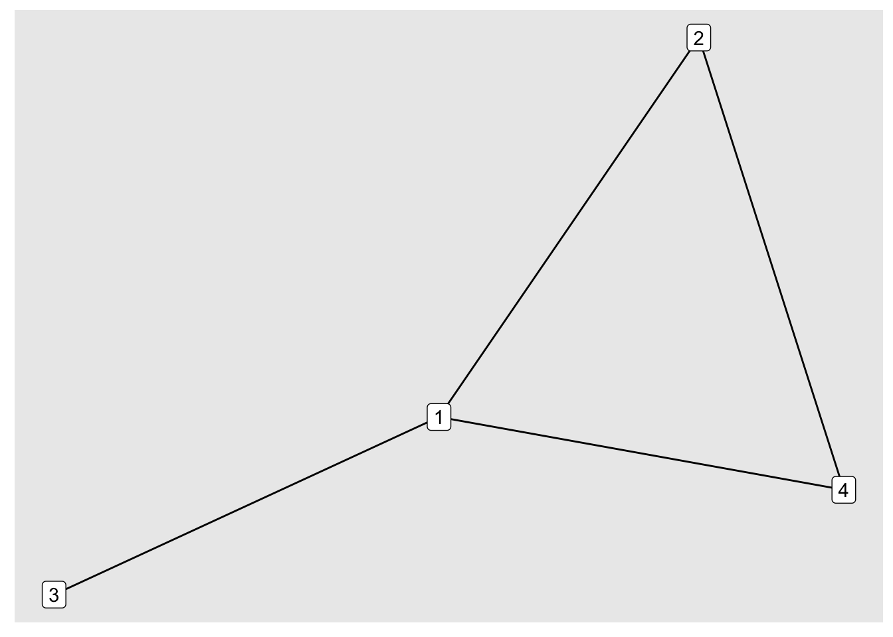
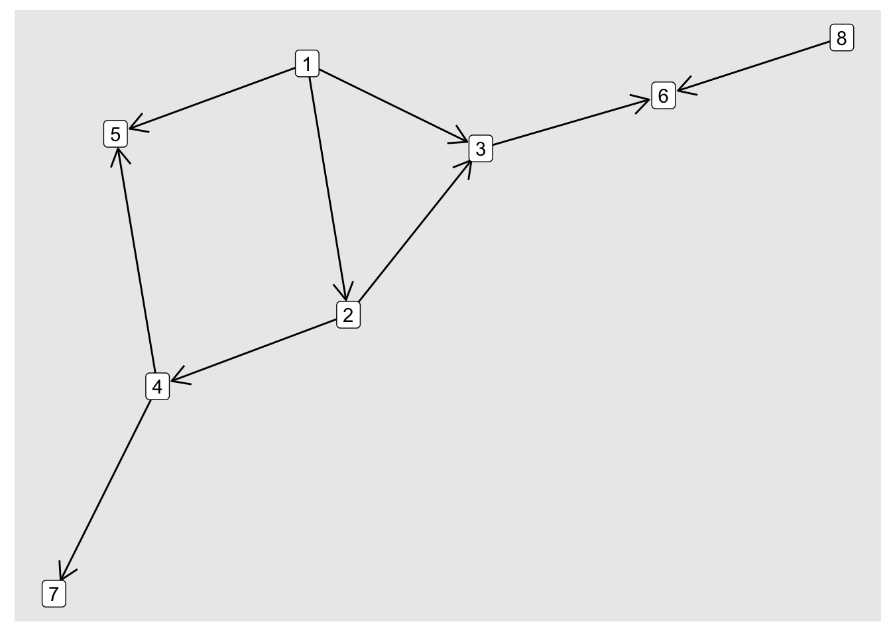

Code
library(igraph)
library(ggraph)
library(tidygraph)
library(netrankr)
library(dplyr)
library(tidyr)
library(ergm)library(igraph)
library(ggraph)
library(tidygraph)
library(netrankr)
library(dplyr)
library(tidyr)
library(ergm)Several types of measuring centrality
Counting the number of in/out edges. summing by weight
Captures the idea that being connected to someone else important means that you yourself are important.
Katz
PageRank
set.seed(1)
# ER random graph, 20 nodes, average 5/20 connections, directed
g_uni <- sample_gnp(20, 5/20, directed=TRUE)
# Simple 1,1, 2, 3 graph
g_simple_adj_matrix <- matrix(c(0, 1, 1, 1,
1, 0, 0, 1,
1, 0, 0, 0,
1, 1, 0, 0),
nrow = 4, ncol = 4)
g_simple <- graph_from_adjacency_matrix(g_simple_adj_matrix, mode = "undirected")
# g_simple %>% set_vertex_attr("name", value = letters[1:4]) # label with alphabet
# ER random graph, 20 nodes, average 5/20, undirected
g_uni_bi <- sample_gnp(20, 5/20, directed=TRUE)
# Simple Directed graph, acyclic
g_simple_dir_adj_matrix <- matrix(c(0, 1, 1, 0, 1, 0, 0, 0,
0, 0, 1, 1, 0, 0, 0, 0,
0, 0, 0, 0, 0, 1, 0, 0,
0, 0, 0, 0, 1, 0, 1, 0,
0, 0, 0, 0, 0, 0, 0, 0,
0, 0, 0, 0, 0, 0, 0, 0,
0, 0, 0, 0, 0, 0, 0, 0,
0, 0, 0, 0, 0, 1, 0, 0),
nrow = 8,
ncol = 8,
byrow = TRUE)
g_simple_dir <- graph_from_adjacency_matrix(g_simple_dir_adj_matrix, mode = "directed")# The graph we look at
ggraph(g_simple, layout = "kk") +
geom_edge_fan() +
geom_node_label(aes(label = 1:4))
# Eigenvector centrality through igraph
cent_eig_igraph <- eigen_centrality(g_simple)$vector
# Through eigenvector decomp
cent_eig_manual <- eigen(g_simple_adj_matrix)$vectors[,1] / eigen(g_simple_adj_matrix)$vectors[1,1]
# They are the same!
cbind(
cent_eig_igraph, # Eigencentrality
cent_eig_manual # eig centrality calculation
) cent_eig_igraph cent_eig_manual
[1,] 1.0000000 1.0000000
[2,] 0.8546377 0.8546377
[3,] 0.4608111 0.4608111
[4,] 0.8546377 0.8546377# Note how
eigen_centralityfunction (graph, directed = FALSE, scale = TRUE, weights = NULL,
options = arpack_defaults)
{
if (!is_igraph(graph)) {
stop("Not a graph object")
}
directed <- as.logical(directed)
scale <- as.logical(scale)
if (is.null(weights) && "weight" %in% edge_attr_names(graph)) {
weights <- E(graph)$weight
}
if (!is.null(weights) && any(!is.na(weights))) {
weights <- as.numeric(weights)
}
else {
weights <- NULL
}
options.tmp <- arpack_defaults
options.tmp[names(options)] <- options
options <- options.tmp
on.exit(.Call(C_R_igraph_finalizer))
res <- .Call(C_R_igraph_eigenvector_centrality, graph, directed,
scale, weights, options)
if (igraph_opt("add.vertex.names") && is_named(graph)) {
names(res$vector) <- vertex_attr(graph, "name", V(graph))
}
res
}
<bytecode: 0x7ff30c39be38>
<environment: namespace:igraph>eigen_centrality(g_simple_dir)$vector[1] 0.9767991 1.0000000 0.9081894 0.7377802 0.6537287 0.4051718 0.2812982
[8] 0.1544825eigen(g_simple_dir_adj_matrix)$vectors[,1] / eigen(g_simple_adj_matrix)$vectors[1,1][1] 1.63498 0.00000 0.00000 0.00000 0.00000 0.00000 0.00000 0.00000length(V(g_simple_dir))[1] 8ggraph(g_simple_dir, layout = "kk") +
geom_edge_fan(arrow = arrow(length = unit(4, "mm")),
end_cap = circle(3, "mm")) +
geom_node_label(aes(label = 1:length(V(g_simple_dir))))
# Calculating Katz Centrality with tidygraph (rank ordered?)
# Only undirected?
as_tbl_graph(g_simple) %>%
mutate(centrality = centrality_katz())# A tbl_graph: 4 nodes and 4 edges
#
# An undirected simple graph with 1 component
#
# Node Data: 4 × 1 (active)
centrality
<dbl>
1 119.
2 101.
3 55.1
4 101.
#
# Edge Data: 4 × 2
from to
<int> <int>
1 1 2
2 1 3
3 1 4
# … with 1 more rowalpha_centrality(g_simple_dir, alpha = 1)[1] 1 2 4 3 5 6 4 1page_rank(g_simple)$vector[1] 0.3667359 0.2459278 0.1414085 0.2459278